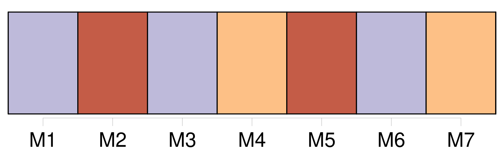

Longueur nb maillons : 41 mentions |
  |
Je revis [Angèle] [, ma sœur] , agenouillée et demandant du secours à Dieu, et j'entendis les cris terrifiés de Nicole et Nicolas, les deux jumeaux. [28 phrases] Ni [Angèle] , [qui] préparait [sa] première communion. [64 phrases] [Angèle] [qui] allait sur [ses] douze ans était placide et triste. [Sa] petite enfance avait été difficile, et grand-mère [l'] avait souvent menée à l'église, où elle faisait brûler des cierges à [son] intention. [Angèle] en avait gardé le goût de la prière, et à la moindre contrariété comme à la moindre joie, [elle] tirait [son] chapelet pour implorer ou remercier la Vierge. [Elle] n'aimait pas le jeu quoiqu' [elle] fût bien portante à présent.
Et quand il nous arrivait, à Firmin et à moi de jouer avec les jumeaux et de les faire rire jusqu'à les rendre malades, [elle] se tenait à l'écart, sans rire ni se fâcher. Une fois pourtant, nous [l'] avions vue en colère. [9 phrases]
[Angèle] se lassa de les entendre ; malgré la défense de nos parents [elle] entr'ouvrit soudain notre porte et nous dit l'air indigné :
Et, courbée vers nous, un pied en avant, et les yeux tout en éclairs, [elle] nous avait menacés d'affreux châtiments venus du ciel, si nous avions l'audace de continuer à rire. La première surprise passée, le serviteur hindou s'était brusquement changé en chien de garde, aboyant furieusement contre [l'intruse] , et [l'] obligeant à fuir.
Puis la porte refermée, le chien avait aboyé avec la même fureur, par le trou de la serrure, autour de nos lits, contre la fenêtre, et même vers le plafond comme pour faire peur autant qu'à [Angèle] , aux maladies, aux péchés, et à tous les châtiments dont nous étions menacés. [139 phrases] Sais -tu qu'hier [Angèle] l'a vue manger un fromage tout entier à son dessert. [7 phrases] Aussi, [Angèle] [qui] a toujours faim de chocolat, m'a promis de se plaindre à maman. [2 phrases] [Angèle] a inventé une jolie prière à la Vierge, afin qu'elle nous accorde la grâce d'aller passer nos vacances au moulin.
Je récite la prière avec [elle] tous les soirs pour que ça réussisse. [1 phrases]
» [109 phrases] Elle parlait des examens scolaires d' [Angèle] et de Firmin. [18 phrases] [Angèle] a réussi, avec félicitations, naturellement. [16 phrases]
Et brusquement [Angèle] et Firmin qui venaient les derniers se retournèrent et crièrent mon nom. [8 phrases] Comme Firmin et [Angèle] m'entraînaient sur la route, mes parents s'arrêtèrent pour me regarder marcher. [5 phrases] Après leur départ, je cessai bientôt d'écouter ce que me disaient [Angèle] et Firmin. [17 phrases] En m'attendant, [Angèle] et Firmin s'étaient endormis sur leur chaise. [5 phrases]
D'accord avec oncle meunier, je décidai de laisser [Angèle] et Firmin dans l'ignorance de ces choses. [38 phrases]
non, crie [Angèle] [qui] n'aime pas le poisson.
Mais Firmin [la] rassure : |

|
La ressource peut être téléchargée sur la page Ortolang
Si vous avez des questions ou vous voyez des erreurs, merci d'envoyer un mail à silvia.federzoni89@gmail.com
Site développé par S. Federzoni (contact)